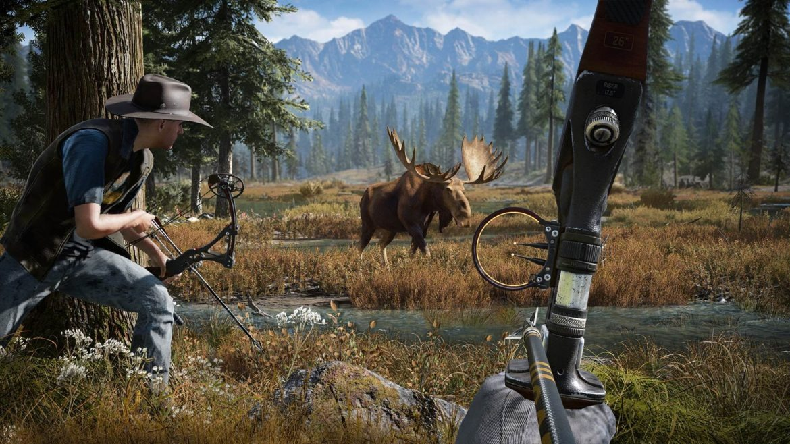
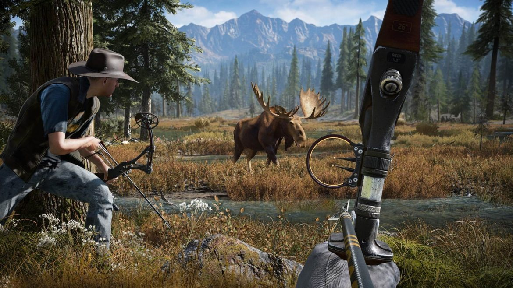

FAR CRY 5
Resistance in Hope County
Resistance in Hope County
 

"Welcome to Hope County, Montana, home to a fanatical doomsday cult known as Eden’s Gate."
Stand up to cult leader Joseph Seed and his siblings to spark the fires of resistance. This archive features the Dunia Engine 2 rendering, high-density wildlife simulation, and full co-op support assets.
Operating System
Windows 7 SP1 / 10 / 11 (64-bit)
Processor (CPU)
Intel Core i5-2400 / AMD FX-6300
Memory (RAM)
8 GB RAM
Graphics (GPU)
NVIDIA GTX 670 / AMD R9 270 (2GB VRAM)
Storage
40 GB Available Space